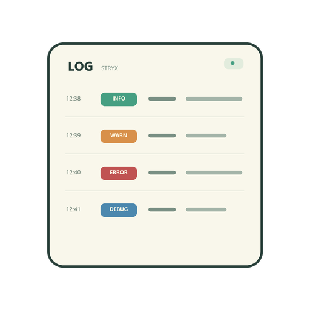

每种格式单独设置规则，导入时为每个文件选择。无时间行接到上一条；文件开头的无时间行接到下一条。修改规则不会改变当前列表。
Rust regex 语法，以 ^ 开头、$ 结尾，包含 time、level、message 命名组，例如 (?P<time>...)。不支持前后查找和反向引用。
%Y 年、%m 月、%d 日、%H 时、%M 分、%S 秒、%f 小数秒（1–9 位）、%z 偏移（如 +0800）、%% 百分号。%[ T] 表示空格或 T，%[.f] 表示可选小数秒，%[Z] 表示可选 Z。其他字符按原样匹配，空格匹配空白。按本地时间排序，不转换时区，请确保各文件采用相同时区。
每个文件独立选择规则，确认后读取并按时间合并。推荐结果仅基于文件开头的样本。